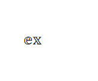

Inspired by conversations with friends invested in the hobby, I dove into researching the process of building a custom mechanical keyboard, searching for possible design opportunities. Observing a pervasive trend of beginners intimidated and overwhelmed by the complexity of the project, I aimed to create a streamlined, informative experience that guides first-timers.
12 weeks
Me (User Experience Design Intern), X, Y
User Research, Product Design, Web Design, Figma
huehueh
My user research started with diving into the world of keyboard building as a newbie myself. I did some online research as if I was about to build my own keyboard, searching for guides, trusted sellers, and explanations of all the different parts. Even though I learned a lot of new jargon and got an idea of the steps involved, I was still unsure if I could actually pull it off. I relied on written guides and YouTube tutorials, but wasn't sure if my knowledge was complete enough to build a keyboard successfully.
To gain more insights, I conducted semi-structured interviews with 3 experienced keyboard hobbyists. I asked them about their high and low points, preparatory research, and struggles they faced during the process.
From my users, I learned that the initial research phase became an overwhelming slog with too much to learn, and too many possible sources.
Users stressed over their choices at the final buying step, hoping they made the right decisions, and felt the need to be “perfect” and get everything right.
1. Save time for hi-fi testing! I conducted really thorough directional testing with my low- and mid-fidelity prototypes in the early and middle phases of this project, and learned a ton that helped define the direction of my product. However, as I set about developing the branding, UI details, and high-fidelity prototype, I only brought snippets and pieces to my users for feedback. By the time I had a complete and interactive flow ready, I had too little time for extensive user testing. Hopefully, now that the in-class timeline for this project is completed, I’ll be able to spend some free time completing those usability tests and really nailing down a more beautiful and usable interface.
2. Don’t fixate! While I identified aggregating sellers as a useful opportunity, I think I settled a little too quickly into my concept of an online storefront. It prevented me from seeing the really useful part of what I was making — the guidance and education — and made me over-focus on the details of the part-browsing UI. In the future, I want to keep my early ideation more broad, not settling on a single platform, problem, or feature until I’ve explored a wider range of options.